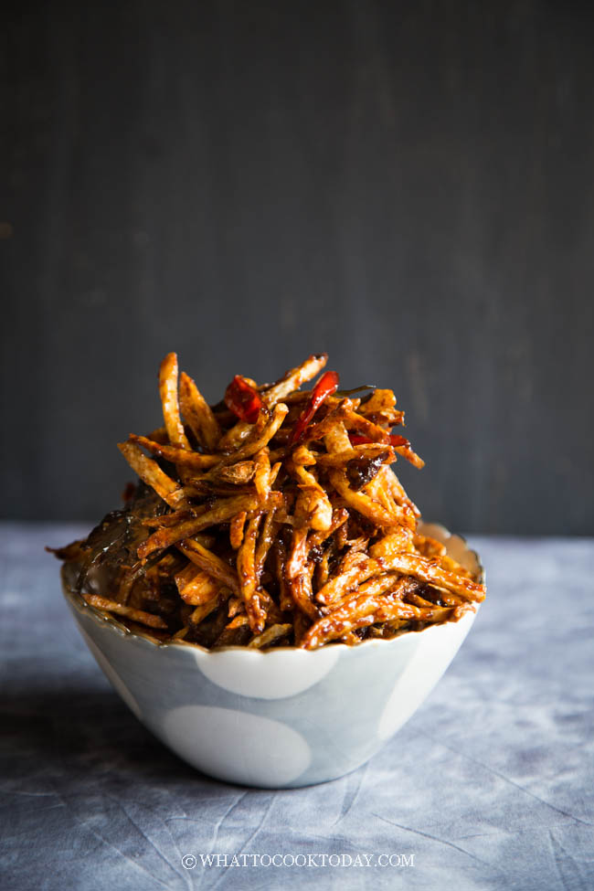

Potato Sticks

Description
Crispy potato sticks are tossed in spicy, sweet, and aromatic sauce will get you hooked for sure. Tips for kering
kentang garing (crispy) without any chemicals.
Ingredients
-
500 gr potatoes
-
Cooking oil to fry potatoes
-
50 gr cooking oil
-
2 cloves garlic grated or finely minced
-
4 kaffir lime leaves remove the vein in the middle use a scissor to cut into tiny pieces
-
2 bay leaves or 4 dried bay leaves
-
100 gr sambal oelek or use chili paste
-
100 gr sugar
-
1 Thai chili seeded and thinly sliced, optional
-
1 Tbsp apple cider vinegar
-
1 tsp galangal powder
-
¼ tsp salt
Steps
- Soak the potatoes:
- Cut the potatoes lengthwise into ¼-inch-thick slices. Stack the slices up and then cut lengthwise into
¼-inch-thick sticks
- Soak the potato sticks in fresh cold water for at least 2 hours (overnight is fine too) and then drain
off all the water and starch that leaks out. Do not skip the soaking part
- Use an absorbent paper towel and pat the potatoes dry
- Fry the potatoes:
- Preheat about 1 1/2-inches of cooking oil over high heat. When you dip a chopstick into a oil and it
bubbles around the chopstick, the oil is ready. Or you can just put one piece of potato in there and if
it bubbles and floats, the oil is ready. Lower the heat to medium
- You need to fry the potatoes in 3-4 batches. DO NOT dump all at one go. Place the first batch in and fry
until the potatoes are crispy and golden brown. Remove to an absorbent paper towel. Continue frying the
next batch.
- Prepare the sambal balado:
- Preheat oil in a large pan/wok. Add the kaffir lime leaves and fry briefly, about 10 seconds or so. Add
the rest of the ingredients above and cook until the sauce thickens to a syrup consistency
- Add the fried potatoes into the sauce and turn off the heat. Use two spatulas to gently toss the fried
potato chips to make sure the sambal is coating the potato chips. Some pieces may be stuck together as
the sugar caramelizes and that's normal. Transfer to a serving bowl. The keripik will crisp up as they
cool down
- To make kering kentang stay crispy:
- Spread the kering kentang on a large baking sheet lined with aluminum foil. Bake in a preheated oven at
325 F (160 C) in the middle rack for 5 minutes. You need to keep an eye on them as there are sugar
coating the chips so it may get burned if you bake for too long
- Let them cool down completely and they will stay crispy for a really long time. Store them in air-tight
container at room temperature